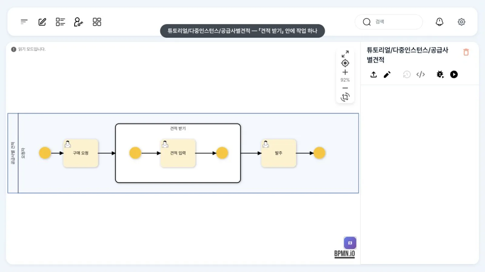
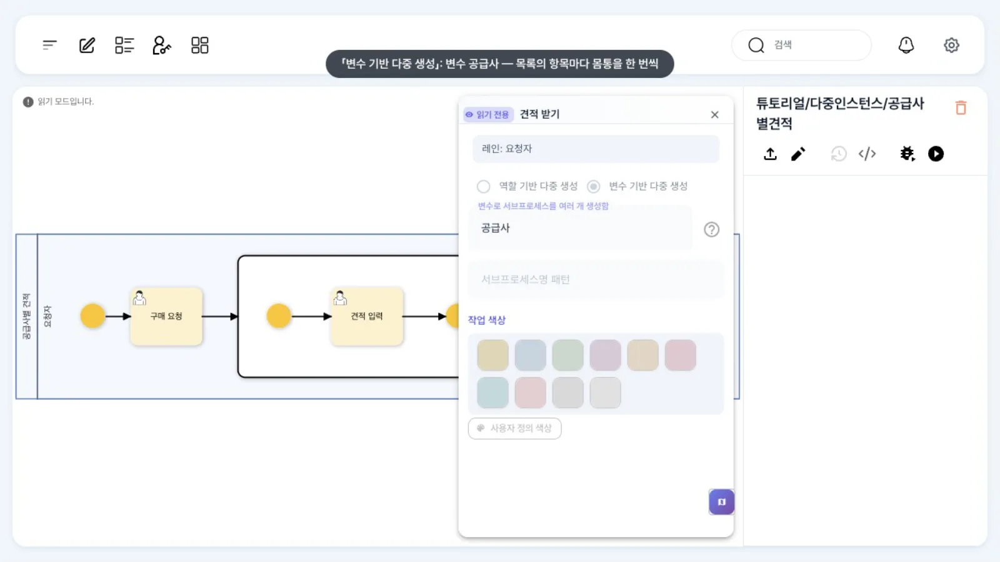
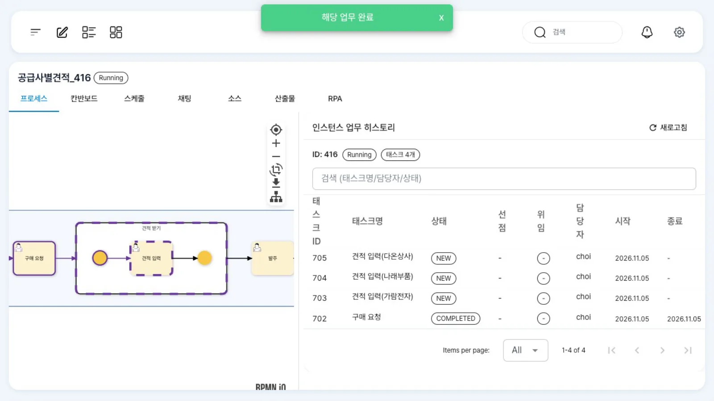
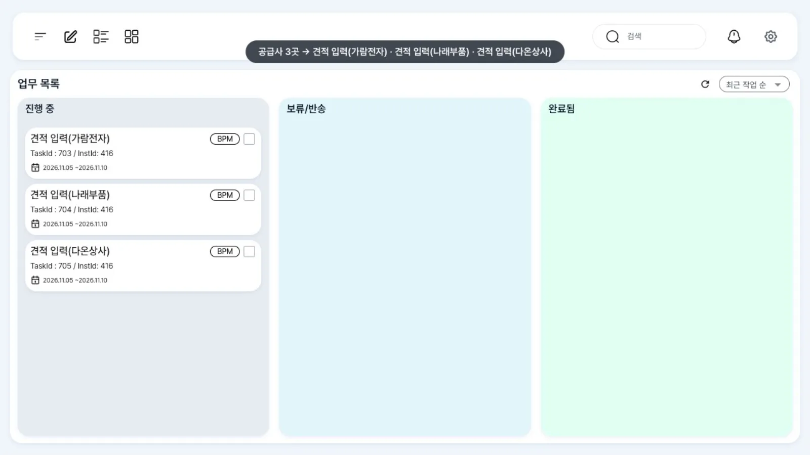

공급사 목록 변수에 세 곳이 들어 있으면 「견적 입력」 작업이 세 건 생기고, 세 건 모두 끝나야 「발주」로 갑니다. 몸통은 사람 작업 하나로 둡니다. 기본 실행 방식은 병렬이며, XML 한 줄로 한 번에 하나씩 실행하도록 바꿉니다.
무엇을 · 왜#
다중 인스턴스(multi-instance)는 같은 일을 목록의 항목 수만큼 되풀이합니다. 공급사별 견적, 부서별 검토, 품목별 검수 같은 일에 씁니다.
BPMN 표준은 작업에 multiInstanceLoopCharacteristics(세로줄 세 개 표시)를 붙이지만, uEngine6는 이 표준 표시를 실행에 쓰지 않습니다. 대신 서브프로세스에 「변수 기반 다중 생성」(forEachVariable)을 설정합니다.
- 목록 변수(예:
공급사 = ["가람전자","나래부품","다온상사"])의 항목마다 서브프로세스 몸통을 한 번씩 실행합니다. 업무 목록의 작업에는 실행 범위(exec_scope0·1·2)가 붙고, 작업 제목 뒤에 그 항목 값이 괄호로 붙습니다(「견적 입력(가람전자)」). - 병렬(기본): 세 건이 한꺼번에 생기고, 모두 끝나야 서브프로세스 다음으로 갑니다.
- 순차:
"multipleInstanceOption":"loop"를 더하면 한 건이 끝나야 다음 건이 생깁니다. 패널에 이 칸이 없어 XML로 넣습니다. - 목록 변수는 JSON 배열로 넣습니다. 인스턴스 시작 API의
processVariableValues나 이벤트 payload로 넣을 수 있습니다.
몸통은 사람 작업 하나로
이 브랜치에서는 다중 생성 서브프로세스의 몸통에 단계가 둘 이상이면 잘못 완료됩니다. 병렬은 각 항목의 첫 단계만 끝나도 다음 단계(발주)가 생기고, 순차는 첫 단계가 끝나자마자 다음 항목이 시작됩니다. 견적 입력과 검토를 나누고 싶다면 「견적 입력」만 다중 생성하고, 검토는 서브프로세스 뒤에 한 번 둡니다.
따라 하기#
- 정의 보기. 홍길동으로
튜토리얼/다중인스턴스/공급사별견적을 엽니다. 「구매 요청 → [견적 받기: 견적 입력] → 발주」입니다. 「견적 받기」는 펼쳐진 서브프로세스이고, 안에 작업이 하나뿐입니다.
공급사별견적 정의 - 다중 생성 설정. 서브프로세스의 테두리(이름 근처)를 더블클릭합니다. 「변수 기반 다중 생성」에 변수
공급사가 선택되어 있습니다. (안쪽 「견적 입력」을 누르면 그 작업의 패널이 열립니다.)
서브프로세스 패널 - XML로 확인. 「XML 보기」에서 서브프로세스의
forEachVariable을 확인합니다. 순차판튜토리얼/다중인스턴스/공급사별견적-순차는 같은 자리에"multipleInstanceOption":"loop"한 줄만 더 있습니다. - 공급사 목록으로 시작. 공급사 세 곳을 넣어 인스턴스를 시작합니다(이 장에서는 API — 아래 레퍼런스). 최구매가 업무 목록에서 「구매 요청」을 열어 품목
노트북으로 「완료」합니다. 완료하면 열리는 인스턴스 화면의 「인스턴스 업무 히스토리」에 「견적 입력(가람전자)」「견적 입력(나래부품)」「견적 입력(다온상사)」가NEW로 생긴 것이 보입니다.
구매 요청 완료 직후의 인스턴스 화면 - 작업 세 건. 최구매의 업무 목록에 같은 InstId의 작업이 세 건 생깁니다. 제목에 항목 값이 괄호로 붙어 「견적 입력(가람전자)」「견적 입력(나래부품)」「견적 입력(다온상사)」입니다.

견적 입력 세 건 - 모두 끝나야 발주. 「견적 입력」을 하나씩 열어 「완료」합니다. 두 건까지는 「발주」가 생기지 않고, 세 번째를 끝내면 생깁니다.
- 변수 확인. 관리자 상세 「프로세스 변수」 탭에서
공급사가 배열["가람전자","나래부품","다온상사"]로 보입니다.
설정 레퍼런스#
서브프로세스 JSON#
| 속성 | 뜻 | 값 |
|---|---|---|
forEachVariable.name |
목록이 들어 있는 프로세스 변수 | "공급사" |
forEachVariable.type |
항목 타입 | "java.lang.String" |
multipleInstanceOption |
생략 = 병렬, "loop" = 순차 |
XML로만 |
| (패널) 「역할 기반 다중 생성」 | forEachRole — 역할에 배정된 사람마다(이 장에서는 쓰지 않음) |
<bpmn:subProcess id="Sp" name="견적 받기">
<bpmn:extensionElements><uengine:properties><uengine:json>
{"forEachVariable":{"name":"공급사","type":"java.lang.String","defaultValue":""}}
<!-- 순차: {"forEachVariable":{…},"multipleInstanceOption":"loop"} -->
</uengine:json></uengine:properties></bpmn:extensionElements>
<bpmn:startEvent id="SpStart" />
<bpmn:userTask id="Quote" name="견적 입력" />
<bpmn:endEvent id="SpEnd" />
<bpmn:sequenceFlow id="S1" sourceRef="SpStart" targetRef="Quote" />
<bpmn:sequenceFlow id="S2" sourceRef="Quote" targetRef="SpEnd" />
</bpmn:subProcess>
목록 변수 넣기#
curl -X POST http://localhost:9294/instance -H "Authorization: Bearer $TOKEN" -H 'Content-Type: application/json' \
-d '{"processDefinitionId":"튜토리얼/다중인스턴스/공급사별견적",
"processVariableValues":[{"name":"공급사","values":[["가람전자","나래부품","다온상사"]]}],
"roleMappings":[{"name":"요청자","endpoints":["choi"]}]}'
values는 변수 값의 배열이므로, 목록 하나를 넣을 때는 [[…]]처럼 한 겹 더 감쌉니다.
실행 결과(API로 확인한 열린 작업)#
| 정의 | 구매 요청 직후 | 한 건 끝낸 뒤 | 두 건 끝낸 뒤 | 세 건 끝낸 뒤 |
|---|---|---|---|---|
| 병렬 | 견적 입력 @0·@1·@2 | @1·@2 | @2 | 발주 |
순차(loop) |
견적 입력 @0 | @1 | @2 | 발주 |
흔한 실수#
| 증상 | 원인 | 고치는 법 |
|---|---|---|
| 견적 입력이 한 건만 생김 | 목록이 아니라 문자열 하나로 넣음 | values: [["가람전자","나래부품","다온상사"]] |
| 검토가 끝나기 전에 발주가 생김 | 몸통에 단계 두 개(결함) | 몸통은 작업 하나, 검토는 서브프로세스 뒤 |
| 순차가 안 됨 | 패널에 칸이 없어 병렬로 저장됨 | XML에 "multipleInstanceOption":"loop" |
| 표준 다중 인스턴스 표시(세로줄 세 개)를 붙였는데 한 번만 실행 | uEngine6는 표준 multiInstanceLoopCharacteristics를 실행에 쓰지 않음 |
서브프로세스 + forEachVariable |
알려진 제약#
- 임베디드 서브프로세스(다중 생성이 아닌 것)는 이 브랜치에서 끝까지 가지 못합니다. 서브프로세스가 끝나도 상태가
Running으로 남고, 뒤 작업을 완료하면500 Illegal completion for workitem이 납니다. 단계를 묶어 재사용하려면 콜 액티비티를 쓰세요. - 다중 생성 몸통은 사람 작업 하나일 때만 정상 동작합니다(위 경고).
확인 문제#
공급사가 다섯 곳이면 정의를 고쳐야 하나요?
고치지 않습니다. 목록 변수에 다섯 항목을 넣으면 「견적 입력」이 다섯 건 생깁니다.
견적마다 검토 단계를 두려고 몸통에 「견적 검토」를 이어 붙이면 어떻게 되나요?
이 브랜치에서는 각 항목의 첫 단계(견적 입력)만 끝나도 발주가 생깁니다. 검토는 열린 채로 남습니다. 검토는 서브프로세스 뒤에 한 번 두세요.